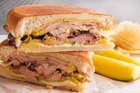

Cuban Midnight Sandwich

This Cuban Midnight Sandwich is perfect for a quick dinner or naughty nighttime snack
This sandwich is called a 'Media Noche' which translates to 'Midnight.' It makes a wonderful dinner sandwich because it is served hot. A nice side dish is black bean soup or black beans and rice, and plantain chips.
Ingredients
- 1 cup mayonnaise
- 5 tablespoons Italian dressing
- 4 hoagie rolls, split lengthwise
- 4 tablespoons prepared mustard
- 1/2 pound thinly sliced deli turkey meat
- 1/2 pound thinly sliced cooked ham
- 1/2 pound thinly sliced Swiss cheese
- 1 cup dill pickle slices
- 1/2 cup olive oil
Steps
- In a small bowl, mix together mayo and Italian dressing
- Spread on hoagie rolls with mustard
- On each roll, arrange layers of turkey, ham, and cheese
- Top each with dill pickle slices
- Close sandwich, and brush top and bottom with olive oil
- Heat a non-stick skillet over medium high heat
- Cook sandwich on each side for 2 minutes, or until cheese melted
- Remove from heat, plate, and cut diagonally